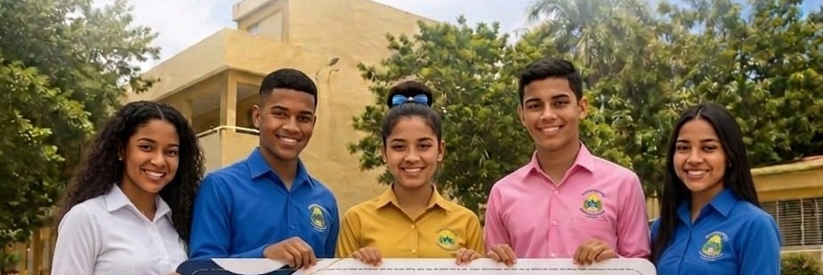
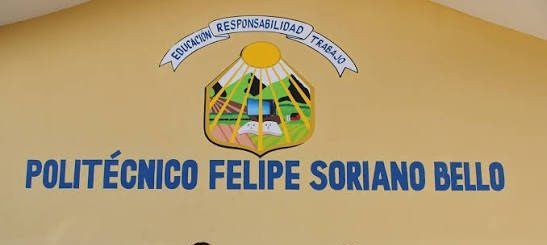
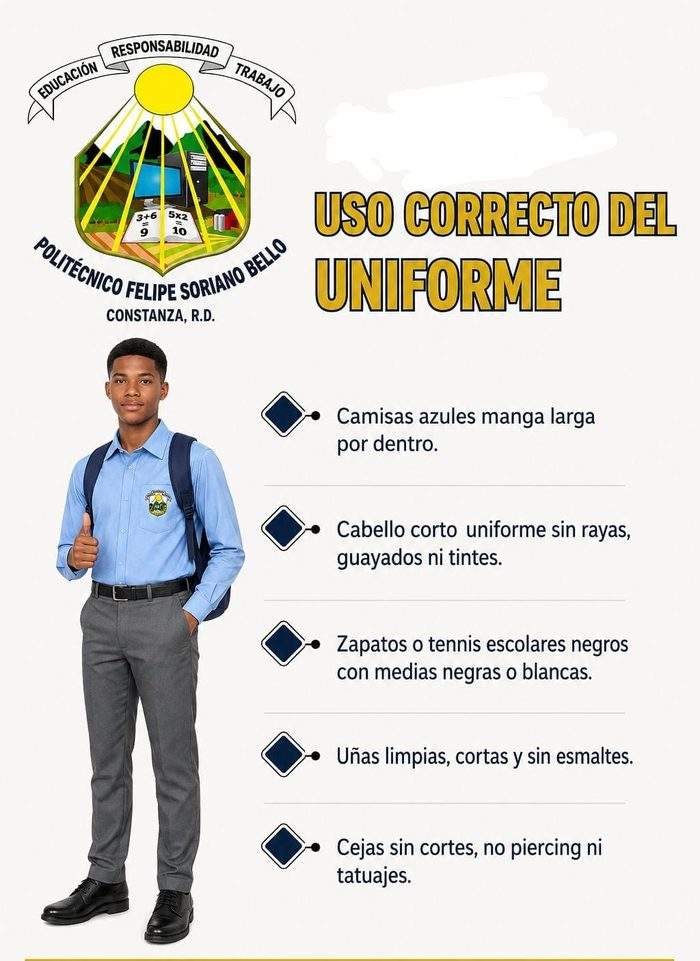
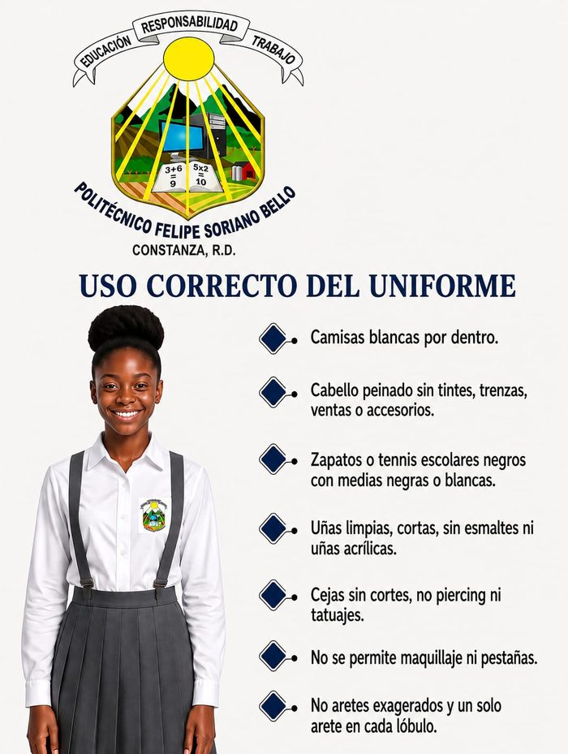
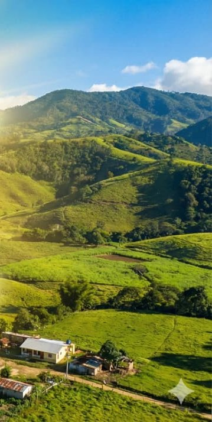

Centro educativo público de Constanza que forma bachilleres técnicos con los pies en la tierra de nuestros valles y la mirada puesta en la tecnología, desde el año 2001.

Estudiantes del Politécnico frente al plantel, Constanza.
Nuestra historia
Todo comenzó en el año escolar 1996-1997, cuando 93 estudiantes se quedaron sin cupo en los liceos de Constanza. La profesora Simona Victoriano —hoy directora— reunió al cuerpo docente y propuso abrir dos primeros cursos; el Distrito Educativo respaldó la iniciativa y los estudiantes se adscribieron al liceo Gastón Fernando Deligne mientras el nuevo centro tomaba forma.
Con los años la matrícula creció con fuerza: se impartieron clases en los pasillos, las familias ayudaron a construir un aula en el patio y, en 2007-2008, la Secretaría de Educación levantó un pabellón de seis aulas amuebladas. Hoy el centro honra con su nombre al maestro constanceño Felipe Soriano Bello e imparte bachillerato técnico profesional en cuatro especialidades.

Fachada del Politécnico Felipe Soriano Bello, Constanza.
Nacido en Constanza el 14 de febrero de 1956, dedicó su vida a la docencia, ejerciendo con especial dedicación en la escuela de La Cotorra. Su espíritu de servicio y su compromiso con la educación de su comunidad llevaron a que este politécnico llevara su nombre en su honor.
Formar personas íntegras, críticas, reflexivas y competentes para insertarse en el mundo laboral, vinculadas a la innovación tecnológica y el emprendimiento.
Ser institución líder en la formación de bachilleres técnicos y competentes para insertarse en el mundo laboral, aportando valores éticos, morales y cristianos para transformar la sociedad desde una perspectiva global e inclusiva.
Lo que nos rige
Filosofía institucional
"Asumimos una filosofía humanístico-social centrada en el amor y el respeto a la vida, el quehacer científico-tecnológico y la promoción de valores cristianos, que permitan construir una sociedad más justa, equitativa y humana — que busque siempre la paz y la preservación del medio ambiente, así como la transmisión permanente de nuestra identidad cultural, para que nuestros egresados alcancen el pleno desarrollo de sus potencialidades." Politécnico Felipe Soriano Bello
Educación técnico-profesional
Cuatro bachilleratos técnicos alineados a las cualificaciones del INFOTEP y el Ministerio de Educación, pensados para insertar a nuestros egresados en el mundo laboral desde el primer día.
Prepara para dirigir el establecimiento, manejo agronómico, cosecha y post-cosecha de cultivos, así como la producción cárnica, láctea y de reproducción de ganado vacuno, ovino, caprino, porcino y avícola, con calidad e inocuidad.
Forma en programación e integración de software y bases de datos, creación de páginas web y estrategias de marketing digital, aplicando buenas prácticas de usabilidad y accesibilidad.
Capacita para la gestión administrativa, contable y tributaria de empresas públicas y privadas, la atención al cliente y el cumplimiento de la normativa vigente en materia fiscal.
Desarrolla competencias de venta y mercadeo a través de canales digitales y presenciales, con estrategias de promoción, segmentación y fidelización de clientes.
Innovación en el aula
Impulsamos el aprendizaje STEAM y la robótica como motor de innovación dentro y fuera del aula, llevando la ciencia y la tecnología del pupitre al taller.
Clubes estudiantiles
Diseño, ensamblaje y programación de robots como espacio extracurricular de práctica técnica.
Un espacio que impulsa la participación de las estudiantes en la tecnología y la informática.
Ciencia, tecnología, ingeniería, arte y matemática integradas en proyectos colaborativos.
Estructura institucional
La organización del centro parte del Distrito Educativo y se despliega en cuatro coordinaciones que sostienen la vida académica, administrativa y de convivencia del plantel.
Año escolar 2026-2027
Un resumen de las orientaciones que compartimos con las familias al inicio de cada año escolar, enmarcadas en las Normas del Sistema Educativo Dominicano para la Convivencia Armoniosa.
| Hora de entrada | 7:30 – 7:45 a.m. |
| Asistencia | Diaria y puntual; las ausencias deben justificarse |
| Uniforme deportivo | Polo blanco con mangas verde hierba y pantalón negro con detalles verdes |


Estas orientaciones se enmarcan en la Ley 136-03 y en las Normas del Sistema Educativo Dominicano para la Convivencia Armoniosa en los Centros Educativos, aprobadas por el Consejo Nacional de Educación.
Nuestro centro

Visítanos
Estamos en el centro de Constanza. Escríbenos, llámanos o pasa por el plantel — con gusto te orientamos.